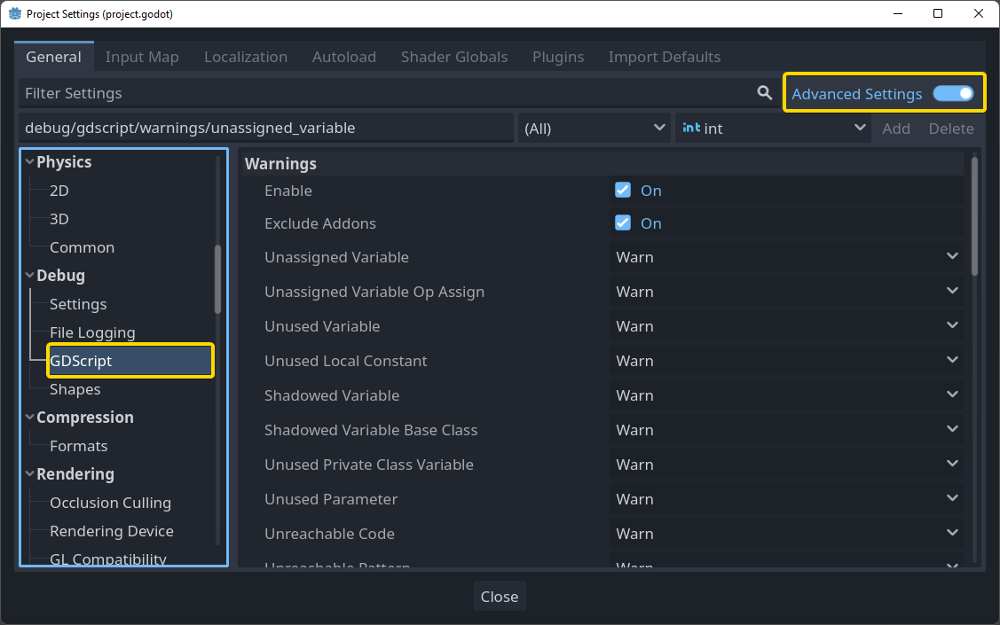
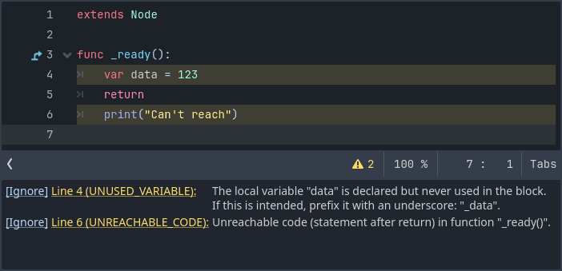
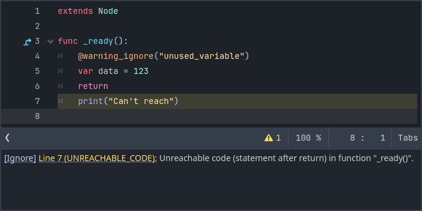
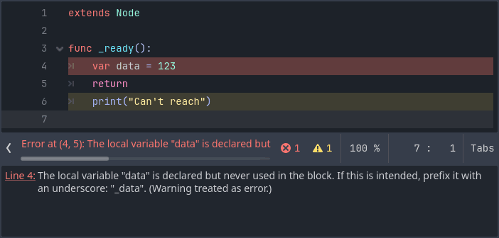

GDScript warning system
The GDScript warning system complements static typing (but it can work without static typing too). It's here to help you avoid mistakes that are hard to spot during development, and that may lead to runtime errors.
You can configure warnings in the Project Settings under the section called GDScript:

Note
You must enable Advanced Settings in order to see the GDScript section in the sidebar. You can also search for "GDScript" when Advanced Settings is off.
You can find a list of warnings for the active GDScript file in the script editor's status bar. The example below has 2 warnings:

To ignore single warnings within a file, use the @warning_ignore annotation. You can click on the ignore link to the left of the warning's description. Godot will add an annotation above the corresponding line and the code won't trigger the corresponding warning anymore:

To ignore multiple warnings in a region within a file, use the
@warning_ignore_start
and @warning_ignore_restore
annotations. You can omit @warning_ignore_restore if you want to ignore
the specified warning types until the end of the file.
The names of the warnings to ignore match the names of the project settings.
For example, to ignore the warning configured by the
debug/gdscript/warnings/unused_variable
project setting, use @warning_ignore("unused_variable").
An autocompletion dialog displays when entering a warning name in the
annotation, listing all available warnings.
Warnings won't prevent the game from running, but you can turn them into
errors if you'd like. This way your game won't compile unless you fix
all warnings. Head to the GDScript section of the Project Settings to
turn on this option to the warning that you want. Here's the same file as
the previous example with the warning unused_variable as an error turned on:
